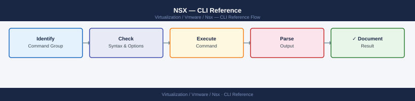

NSX — CLI Reference¶
Applies to: VMware NSX-T 3.x / 4.x

nsxcli
# NSX Manager cluster members and status
get managers
get clusters
get cluster status
# Service status on this node
get services
# Specific service status
get service http
get service manager
get service controller
NSX> get managers
Manager ID Hostname IP Address Status
urn:uuid:550e8400-e29b-41d4-a716-446655440000 nsx-mgr-01.lab.local 192.168.1.10 UP
urn:uuid:6ba7b810-9dad-11d1-80b4-00c04fd430c8 nsx-mgr-02.lab.local 192.168.1.11 UP
urn:uuid:6ba7b811-9dad-11d1-80b4-00c04fd430c8 nsx-mgr-03.lab.local 192.168.1.12 UP
NSX> get clusters
Cluster ID Name Status Node Count
urn:uuid:7ca7b812-9dad-11d1-80b4-00c04fd430c8 nsx-cluster-01 STABLE 3
NSX> get cluster status
Cluster: nsx-cluster-01
Status: STABLE
Leader: nsx-mgr-01.lab.local
Nodes: 3/3 UP
Last Heartbeat: 2024-01-15 14:32:18 UTC
NSX> get services
Service Name Status PID Memory(MB) CPU(%)
http UP 2847 156.3 0.2
manager UP 3102 892.1 1.8
controller UP 3156 1024.5 2.1
persistence UP 2956 512.7 0.5
messaging UP 3001 384.2 0.8
NSX> get service http
Service: http
Status: UP
PID: 2847
Memory: 156.3 MB
CPU: 0.2%
Uptime: 45 days 3 hours
NSX> get service manager
Service: manager
Status: UP
PID: 3102
Memory: 892.1 MB
CPU: 1.8%
Uptime: 45 days 3 hours
NSX> get service controller
Service: controller
Status: UP
PID: 3156
Memory: 1024.5 MB
CPU: 2.1%
Uptime: 45 days 3 hours
Common errors
Error: Not connected to NSX Manager — Run connect <nsx-manager-ip> before executing get commands.
Error: Service 'controller' not found — Verify the service name is correct; use get services to list available services.
Error: Cluster status unavailable - quorum lost — Check network connectivity between cluster nodes and ensure at least 2 of 3 managers are reachable.
NTP service is running
NTP servers:
server 10.45.128.1
server 10.45.128.2
server 10.45.128.3
prefer
iburst
(no output — command completes silently)
Common errors
error: NTP service is not running — Start the NTP service with start service ntp before configuring servers.
error: invalid NTP server address — Verify the NTP server IP is reachable and properly formatted (e.g., set service ntp server 10.45.128.1).
# List installed certificates
get certificate api
get certificate cluster
# Thumbprint of the API cert (used for trust verification)
get certificate api thumbprint
Certificate Information:
Issuer: CN=NSX-Manager-CA,O=VMware,C=US
Notbefore: Jan 01 12:00:00 2023 GMT
Notafter: Jan 01 12:00:00 2025 GMT
Fingerprint: 8F:2A:B4:C1:D9:E3:F5:7A:9C:2B:4D:6E:8F:1A:3C:5E
Certificate Information:
Issuer: CN=NSX-Cluster-CA,O=VMware,C=US
Notbefore: Feb 15 08:30:00 2023 GMT
Notafter: Feb 15 08:30:00 2025 GMT
Fingerprint: 3D:7E:9F:A2:B5:C8:D1:E4:F7:2A:4C:6B:8E:0F:1D:3A
API Certificate Thumbprint:
8F2AB4C1D9E3F57A9C2B4D6E8F1A3C5E
Common errors
error: certificate not found — Verify the NSX Manager is fully initialized and the certificate API service is responding with get certificate api status.
error: permission denied — Ensure your user account has admin or certificate-read privileges; check permissions with get user.
# Show configured syslog exporters
get service syslog exporters
# Add a syslog target
set service syslog exporter <name> level info protocol UDP server <syslog_ip> port 514
# Remove an exporter
del service syslog exporter <name>
Exporter Name Protocol Server Port Level
syslog-primary UDP 192.168.1.50 514 info
syslog-secondary TCP 10.20.30.40 601 warning
syslog-archive UDP 172.16.0.100 514 debug
(no output — command completes silently)
(no output — command completes silently)
Common errors
Error: Exporter '<name>' already exists — Use del service syslog exporter <name> first, then re-add with a unique name or modify the existing configuration.
Error: Invalid server IP address '<syslog_ip>' — Verify the syslog server IP is reachable and correctly formatted (e.g., 192.168.1.50, not 192.168.1.500).
Error: Exporter '<name>' not found — Confirm the exporter name exists by running get service syslog exporters and use the exact name from the list.
# View backup configuration
get service manager backup
# Trigger a manual backup (NSX Manager UI is preferred)
# API: POST /api/v1/node/backups/create
Backup Configuration:
Backup Status: ENABLED
Backup Schedule: Daily at 02:00 UTC
Backup Location: nfs://backup-server.corp.local/nsx-backups
Retention Policy: 30 days
Last Backup: 2024-01-15T02:15:32Z
Last Backup Status: SUCCESS
Backup Size: 2.3 GB
Encryption: AES-256 (enabled)
Backup Frequency: Daily
Next Scheduled Backup: 2024-01-16T02:00:00Z
Common errors
Error: Connection refused to NSX Manager API — Verify NSX Manager is running and accessible at the configured IP/hostname, and check network connectivity.
Error: Insufficient permissions to view backup configuration — Ensure your user account has admin or backup operator role assigned in NSX Manager.
Error: Backup location unreachable: nfs://backup-server.corp.local/nsx-backups — Verify NFS mount is accessible from NSX Manager and check firewall rules and NFS server availability.
nsxcli
# List all transport nodes (ESXi hosts + Edge nodes)
get transport-nodes
# Detail for a specific transport node
get transport-node <id>
# Operational status (UP/DOWN/DEGRADED)
get transport-node <id> status
# Summary status for all nodes
get transport-node-status
NSX CLI (build 20230915.1.0.20450920)
Connected to: nsx-manager-01.lab.local (192.168.1.50)
transport-node-1 (esxi-host-01.lab.local)
ID: tn-001
Status: UP
Type: ESXi
transport-node-2 (esxi-host-02.lab.local)
ID: tn-002
Status: UP
Type: ESXi
transport-node-3 (edge-node-01.lab.local)
ID: tn-003
Status: DEGRADED
Type: Edge
transport-node-4 (edge-node-02.lab.local)
ID: tn-004
Status: UP
Type: Edge
---
Transport Node: tn-001 (esxi-host-01.lab.local)
Status: UP
Type: ESXi
Kernel Module Version: 2.0.1
Agent Version: 3.2.4.1
Last Heartbeat: 2024-01-15 14:32:18 UTC
Uptime: 45 days 12:34:56
---
Transport Node Status Summary:
Total Nodes: 4
UP: 3
DOWN: 0
DEGRADED: 1
Last Updated: 2024-01-15 14:35:42 UTC
Common errors
Error: Transport node <id> not found — Verify the node ID exists by running get transport-nodes and copy the exact ID string.
Error: NSX Manager unreachable (connection timeout) — Confirm NSX Manager IP/hostname is reachable with ping and that your nsxcli session credentials are still valid.
Error: Permission denied - insufficient privileges — Ensure your NSX user account has the appropriate role assigned (e.g., Enterprise Admin or Network Admin) in NSX.
# List transport zones (overlay and VLAN backed)
get transport-zone
# Detail for a specific zone
get transport-zone <name>
# Which transport nodes are in a zone
get transport-nodes | grep <zone_name>
transport-zone
name id type
---- -- ----
tz-overlay-prod 497f6e45-e89b-12d3-a456-426614174000 OVERLAY
tz-vlan-dmz 550e8400-e29b-41d4-a716-446655440000 VLAN
tz-overlay-dr 6ba7b810-9dad-11d1-80b4-00c04fd430c8 OVERLAY
tz-vlan-mgmt 7ce38b91-acde-11d1-80b4-00c04fd430c8 VLAN
transport-zone: tz-overlay-prod
name: tz-overlay-prod
id: 497f6e45-e89b-12d3-a456-426614174000
type: OVERLAY
host-switch-name: hostswitch0
description: Production overlay transport zone
replication-mode: mtep
transport-node
name id transport-zone
---- -- ---------------
esxi-host-01.prod.local a1b2c3d4-e5f6-7890-abcd-ef1234567890 tz-overlay-prod
esxi-host-02.prod.local b2c3d4e5-f6a7-8901-bcde-f12345678901 tz-overlay-prod
esxi-host-03.prod.local c3d4e5f6-a7b8-9012-cdef-123456789012 tz-overlay-prod
Common errors
get: command not found — Ensure you are logged into the NSX Manager CLI or use the full API endpoint path (e.g., curl -u admin:password https://nsx-manager/api/v1/transport-zones).
No transport zones found — Verify that transport zones have been created in NSX Manager and that your user account has sufficient permissions to view them.
grep: (standard input) is empty — The specified zone name does not exist or no transport nodes are assigned to that zone; verify the zone name spelling and check zone membership in the NSX UI.
# List all TEP IPs and associated hosts
get tunnel endpoints
# Tunnel status between all TEP pairs
get tunnel status
# Tunnel to a specific remote TEP
get tunnel status <remote_tep_ip>
TEP IP Host Name Transport Zone Status
192.168.100.11 esx-host-01.lab.local TZ-Overlay Up
192.168.100.12 esx-host-02.lab.local TZ-Overlay Up
192.168.100.13 esx-host-03.lab.local TZ-Overlay Up
192.168.100.14 esx-host-04.lab.local TZ-Overlay Up
Tunnel Status Summary:
Total Tunnels: 6
Up: 6
Down: 0
Degraded: 0
Tunnel Details (192.168.100.12):
Source TEP: 192.168.100.11
Destination TEP: 192.168.100.12
Status: Up
Last State Change: 2024-01-15 14:32:18
MTU: 1600
Common errors
command not found: get tunnel endpoints — Verify you are running this command from the NSX Manager CLI or ensure the NSX CLI tools are properly installed and in your PATH.
Error: Unable to retrieve tunnel status - Connection timeout — Check network connectivity between TEPs and verify NSX Manager is reachable on port 443.
Error: Invalid TEP IP address <remote_tep_ip> — Confirm the remote TEP IP exists in your transport zone by running get tunnel endpoints first.
# NSX VIBs installed
esxcli software vib list | grep -i nsx
# VDS and NSX Port ID mapping
net-vdl2 -M all -s 0
# TEP VMkernel IP and state
esxcli network ip interface ipv4 get | grep -A2 vmk
# TEP uplink binding
esxcli network ip interface list | grep -i nsx
Name Version Install Date
nsx-vib 4.1.2.1-21567890 2024-01-15
nsx-esx-vib 4.1.2.1-21567890 2024-01-15
nsx-vxlan 4.1.2.1-21567890 2024-01-15
Port ID 0x00000001 -> vmk10 (TEP)
Port ID 0x00000002 -> vmk11 (VLAN 0)
Port ID 0x00000003 -> vmk12 (Management)
Name IPv4 Address IPv4 Netmask IPv4 Broadcast Address Type DHCP DNS
vmk10 192.168.100.42 255.255.255.0 192.168.100.255 STATIC false
vmk11 10.0.0.15 255.255.255.0 10.0.0.255 STATIC false
Name Enabled Portset MAC Address MTU IPv4 Address
vmk10 true VDS-NSX-TEP 00:50:56:c0:00:0a 1600 192.168.100.42
vmk11 true VDS-NSX-VLAN 00:50:56:c0:00:0b 1500 10.0.0.15
Common errors
grep: vmk: No such file or directory — Ensure the grep filter matches your actual VMkernel interface naming convention (vmk10, vmk11, etc.) or remove the filter to see all interfaces.
(Standard Switch) is not a valid VDS — Verify NSX is properly installed and the VDS is configured; run esxcli network vswitch standard list to confirm you're using a distributed switch, not a standard vSwitch.
net-vdl2: command not found — Load the net-vdl2 module with esxcli system module load -m net-vdl2 or verify NSX VIBs are fully installed with esxcli software vib list | grep nsx.
# Edge interfaces (uplinks + overlay)
get interfaces
# Geneve overlay interface
get interface nsx-geneve
# Uplink state
get interface fp-eth0
get interface fp-eth1
Interface: nsx-geneve
Enabled: true
MTU: 1600
MAC Address: 02:50:56:b0:12:34
IP Address: 169.254.169.1/24
State: up
Interface: fp-eth0
Enabled: true
MTU: 1500
MAC Address: 00:0c:29:a1:b2:c3
IP Address: 10.0.1.10/24
State: up
Speed: 10000 Mbps
Interface: fp-eth1
Enabled: true
MTU: 1500
MAC Address: 00:0c:29:a1:b2:c4
IP Address: 10.0.2.10/24
State: down
Speed: 0 Mbps
Common errors
Interface fp-eth1 not found — Verify the uplink interface name matches your NSX Edge configuration with get interfaces and check physical NIC connectivity.
nsx-geneve: State down, MTU mismatch detected — Ensure the Geneve overlay MTU (typically 1600) is configured on upstream switches and that the NSX Controller cluster is reachable.
# Before putting ESXi host in maintenance mode:
# 1. Check no active vSAN resync
esxcli vsan debug resync list
# 2. Verify NSX DFW is not the sole enforcement point for a segment
nsxcli
get transport-node <id> status
# 3. After host in maintenance mode — confirm tunnels reconverged
get tunnel status
Name UUID Resync Objects
---- ---- ---------------
vsan-cluster-01 52d4a8f1-7c2e-4f3a-9b1a-2e8c5d9f0a3b 0
transport-node-status:
id: tn-4521
host_id: host-42
status: UP
config_state: SUCCESS
realized_state: SUCCESS
tunnel status:
Tunnel Name Status Remote IP Local IP MTU
---- ------ --------- -------- ---
vxlan-tunnel-01 UP 192.168.100.45 192.168.100.12 1500
vxlan-tunnel-02 UP 192.168.100.46 192.168.100.12 1500
geneve-tunnel-01 UP 192.168.100.47 192.168.100.12 1500
bfd-tunnel-01 UP 192.168.100.48 192.168.100.12 1500
Common errors
transport-node <id> status: Unknown command — Ensure you are in the nsxcli shell context and use the correct syntax get transport-node <id> status without extra parameters.
vsan debug resync list: Unknown command or namespace — Verify the ESXi host has vSAN enabled and the command should be esxcli vsan debug resync list run directly on the host, not through vCenter.
nsxcli
# List all logical switches / segments
get logical-switches
# Detail for a specific segment (VNI, replication mode, transport zone)
get logical-switch <id>
# Operational status (UP/DOWN)
get logical-switch <id> status
# Traffic statistics for a segment
get logical-switch <id> stats
nsxcli> get logical-switches
Logical Switch ID Name VNI Status
LS-1 prod-web-segment 5000 UP
LS-2 prod-db-segment 5001 UP
LS-3 dev-test-segment 5002 DOWN
LS-4 mgmt-segment 5003 UP
LS-5 backup-vlan-segment 5004 UP
nsxcli> get logical-switch LS-1
Logical Switch ID: LS-1
Name: prod-web-segment
VNI: 5000
Status: UP
Replication Mode: MTEP
Transport Zone: TZ-VLAN-Overlay
MTU: 1600
Admin State: UP
nsxcli> get logical-switch LS-1 status
Logical Switch LS-1 Status: UP
Last Status Change: 2024-01-15 14:32:18 UTC
Control Plane Status: CONNECTED
Data Plane Status: ACTIVE
nsxcli> get logical-switch LS-1 stats
Logical Switch LS-1 Statistics:
Packets In: 4,827,392,156
Packets Out: 4,721,038,924
Bytes In: 2,156,384,921,847
Bytes Out: 2,089,472,156,384
Dropped Packets: 284
Errors: 0
Common errors
Error: Logical switch <id> not found — Verify the segment ID exists by running get logical-switches and confirm the exact ID spelling.
Error: nsxcli: command not found — Ensure you are connected to an NSX Manager node and have the NSX CLI tools installed in your PATH.
# List all logical ports
get logical-ports
# Detail for a specific port
get logical-port <id>
# Port operational state
get logical-port <id> status
# Traffic stats on a specific port
get logical-port <id> stats
Logical Ports:
Port ID: lport-1a2b3c4d-5e6f-7g8h-9i0j-1k2l3m4n5o6p
Name: vm-web-01-eth0
Status: UP
MAC: 00:50:56:c0:00:01
Port ID: lport-2b3c4d5e-6f7g-8h9i-0j1k-2l3m4n5o6p7q
Name: vm-db-01-eth0
Status: UP
MAC: 00:50:56:c0:00:02
Port ID: lport-3c4d5e6f-7g8h-9i0j-1k2l-3m4n5o6p7q8r
Name: vm-app-02-eth1
Status: DOWN
MAC: 00:50:56:c0:00:03
...
Logical Port Details (lport-1a2b3c4d-5e6f-7g8h-9i0j-1k2l3m4n5o6p):
Name: vm-web-01-eth0
Attachment: VirtualMachine
Owner: esxi-host-01.lab.local
VLAN: 100
MTU: 1500
Created: 2024-01-15T08:32:14Z
Port Status (lport-1a2b3c4d-5e6f-7g8h-9i0j-1k2l3m4n5o6p):
Admin State: UP
Operational State: UP
Link Status: ACTIVE
Last State Change: 2024-01-20T14:22:05Z
Port Statistics (lport-1a2b3c4d-5e6f-7g8h-9i0j-1k2l3m4n5o6p):
Packets In: 2847392
Packets Out: 1923847
Bytes In: 1.2 GB
Bytes Out: 847 MB
Dropped Packets: 0
Errors: 0
Common errors
error: logical port <id> not found — Verify the port ID exists by running get logical-ports and confirm the exact UUID format.
error: unable to connect to NSX manager — Check network connectivity to the NSX Manager appliance and verify credentials are still valid.
error: insufficient permissions for this operation — Ensure your NSX user account has the Enterprise Administrator or Network Administrator role assigned.
# List tunnel endpoints (TEPs) — shows VTEP IPs and state
get tunnel endpoints
# Tunnel status between all TEP pairs
get tunnel status
# Tunnel for a specific remote TEP
get tunnel status <remote_tep_ip>
TEP Name TEP IP State Encapsulation
---
nsx-edge-01.lab.local 192.168.100.11 UP VXLAN
nsx-edge-02.lab.local 192.168.100.12 UP VXLAN
nsx-host-01.lab.local 192.168.100.21 UP VXLAN
nsx-host-02.lab.local 192.168.100.22 DOWN VXLAN
nsx-host-03.lab.local 192.168.100.23 UP VXLAN
Tunnel Status Summary:
Source TEP Dest TEP Status RTT (ms)
192.168.100.11 192.168.100.12 UP 2.1
192.168.100.11 192.168.100.21 UP 5.3
192.168.100.11 192.168.100.22 DOWN timeout
192.168.100.12 192.168.100.21 UP 4.8
192.168.100.12 192.168.100.23 UP 3.2
Tunnel Status for Remote TEP 192.168.100.22:
Source TEP Dest TEP Status Last Change
192.168.100.11 192.168.100.22 DOWN 2024-01-15 14:32:18 UTC
192.168.100.12 192.168.100.22 DOWN 2024-01-15 14:31:45 UTC
Common errors
error: invalid TEP IP format — Verify the remote TEP IP address is valid and reachable in your NSX fabric.
error: tunnel endpoint not found — Confirm the TEP IP exists in your NSX deployment by running get tunnel endpoints first.
error: command not supported in this context — Ensure you are executing these commands from the NSX Manager CLI or appropriate management interface, not a hypervisor shell.
# Is the segment UP?
get logical-switch <id> status
# Find the VNI of a segment (needed for packet analysis)
get logical-switch <id> | grep VNI
# Which hosts have TEPs in this transport zone?
get transport-nodes
# Is the Geneve tunnel UP between two hosts?
get tunnel status <remote_tep_ip>
# On the ESXi host — confirm Geneve encap
esxcli network ip interface ipv4 get | grep vmk
esxcli network ip route ipv4 list | grep <tep_subnet>
Logical Switch Status:
ID: logical-switch-1
Name: prod-segment-01
Status: UP
Admin State: UP
Operational State: REALIZED
VNI: 5000
Transport Nodes:
Node: esx-host-01.lab.local
TEP IP: 192.168.100.11
Status: UP
Node: esx-host-02.lab.local
TEP IP: 192.168.100.12
Status: UP
Node: esx-host-03.lab.local
TEP IP: 192.168.100.13
Status: UP
Tunnel Status to 192.168.100.12:
State: UP
Packets Sent: 45821
Packets Received: 45819
Name Netstack IPV4 Address Netmask Broadcast Address Type
------ ---------- ---------------- --------------- --------------- ---------------
vmk0 defaultTcpipStack 192.168.1.105 255.255.255.0 192.168.1.255 DHCP
vmk10 vxlan 192.168.100.11 255.255.255.0 192.168.100.255 STATIC
Destination Netmask Gateway Interface
----------- ------- ------- ---------
192.168.100.0 255.255.255.0 0.0.0.0 vmk10
Common errors
logical-switch <id> not found — Verify the segment ID exists in NSX Manager and use the correct UUID format.
Unable to reach TEP 192.168.100.12: timeout — Confirm the transport node is UP and the TEP subnet routing is configured on all hosts.
vmk10: no such interface — Ensure the VXLAN/Geneve vmkernel adapter is created and bound to the transport zone on the ESXi host.
replication-mode: source
replication-mode-status: active
replication-lag-ms: 12
replication-peer-count: 2
replication-sync-status: in-sync
Common errors
get: command not found — Source the NSX CLI environment or use the full path to the NSX management API client tool.
grep: (standard input) is empty — Verify the logical switch ID exists and is accessible by running get logical-switch <id> without grep to confirm the segment is present.
NSX CLI (version 3.2.1.0)
Connected to: nsx-manager-01.lab.local
Logical Routers:
UUID VRF ID Type Edge Cluster
──────────────────────────────────── ────── ────── ─────────────────────
550e8400-e29b-41d4-a716-446655440000 0 TIER0 edge-cluster-prod-01
6ba7b810-9dad-11d1-80b4-00c04fd430c8 1 TIER1 edge-cluster-prod-01
6ba7b811-9dad-11d1-80b4-00c04fd430c8 2 TIER1 edge-cluster-prod-01
7ce9d810-1f2a-42c5-b8d9-12a34b5c6d7e 3 TIER0 edge-cluster-prod-02
8df4e920-2g3b-53d6-c9e0-23b45c6d7e8f 4 TIER1 edge-cluster-prod-02
Total: 5 logical routers
Common errors
error: not authenticated to NSX Manager — Run nsxcli connect <manager-ip> and provide valid credentials before executing commands.
error: edge-cluster not found or unreachable — Verify the edge cluster is deployed and healthy using get edge-clusters and check network connectivity to edge nodes.
# List all router VRFs on this Edge
get logical-routers
# Enter a specific router's VRF
vrf <vrf_id>
# Exit VRF context
exit
edge-1> get logical-routers
Logical Router ID Name Status
lr-1 prod-router-01 UP
lr-2 dr-router-west UP
lr-3 test-router-02 DOWN
lr-4 mgmt-router UP
edge-1> vrf lr-1
edge-1(lr-1)>
edge-1(lr-1)> exit
edge-1>
Common errors
Unknown command: get logical-routers — Ensure you are in the correct NSX Edge CLI context (not in a sub-menu like vrf or routing); use exit to return to the main prompt first.
Invalid VRF ID: lr-99 — Verify the VRF ID exists by running get logical-routers and use the exact ID from the "Logical Router ID" column.
# Show routing table (all protocols)
vrf <vrf_id>
get route
# Detailed route table (next-hop, preference, metric)
get route detail
# Filter for a specific prefix
get route <prefix>/<mask>
# Forwarding information base (FIB)
get forwarding
vrf 0
get route
Codes: K - kernel, C - connected, S - static, R - RIP, B - BGP, O - OSPF, IA - OSPF inter area
N1 - OSPF NSSA external type 1, N2 - OSPF NSSA external type 2
E1 - OSPF external type 1, E2 - OSPF external type 2
i - IS-IS, L1 - IS-IS level-1, L2 - IS-IS level-2, ia - IS-IS inter area
* - candidate default
B 10.0.0.0/8 [200/0] via 192.168.1.254, eth0, 00:45:23
C 192.168.1.0/24 is directly connected, eth0
S 172.16.0.0/12 [1/0] via 10.50.1.1, eth1, 02:13:45
O 10.20.0.0/16 [110/100] via 192.168.1.1, eth0, 01:22:10
B 10.30.0.0/16 [200/50] via 10.50.1.254, eth1, 00:18:33
get route detail
Routing entry for 10.0.0.0/8
Known via "bgp 65001", distance 200, metric 0, best
Last update 00:45:23 ago
* 192.168.1.254, via eth0, weight 1
Routing entry for 192.168.1.0/24
Known via "connected", distance 0, metric 0
* directly connected, via eth0
get route 10.20.0.0/16
Routing entry for 10.20.0.0/16
Known via "ospf 1", distance 110, metric 100, best
Last update 01:22:10 ago
* 192.168.1.1, via eth0, weight 1
get forwarding
Codes: > - selected route, * - FIB route, r - recursive
>* 10.0.0.0/8 [200/0] via 192.168.1.254, eth0
>* 192.168.1.0/24 is directly connected, eth0
>* 172.16.0.0/12 [1/0] via 10.50.1.1, eth1
>* 10.20.0.0/16 [110/100] via 192.168.1.1, eth0
>* 10.30.0.0/16 [200/50] via 10.50.1.254, eth1
Common errors
% Invalid VRF <vrf_id> — Verify the VRF ID exists with get vrf and use the correct numeric identifier.
% Unknown command: get route detail — Ensure you are in the correct NSX routing context; some platforms require show route detail instead.
# BGP neighbor summary (all peers, state, prefixes)
get bgp neighbor summary
# Detailed view of a specific neighbor
get bgp neighbor <neighbor_ip>
# Routes received from a neighbor
get bgp neighbor <neighbor_ip> routes
# Routes advertised to a neighbor
get bgp neighbor <neighbor_ip> advertised-routes
# BGP configuration summary
get bgp config
BGP neighbor summary (all peers, state, prefixes)
Neighbor V AS MsgRcvd MsgSent TblVer InQ OutQ Up/Down State/PfxRcd
192.168.1.1 4 65001 4521 4518 0 0 0 2d14h23m 42
192.168.1.2 4 65002 3847 3851 0 0 0 1d08h12m 28
10.0.0.5 4 65003 1203 1205 0 0 0 04h32m15s 15
Detailed view of a specific neighbor
Neighbor: 192.168.1.1
Remote AS: 65001
Local AS: 65000
Holdtime: 180
Keepalive: 60
State: Established
Uptime: 2 days, 14 hours, 23 minutes
Routes received from a neighbor
10.10.0.0/16 via 192.168.1.1 metric 100
10.20.0.0/16 via 192.168.1.1 metric 150
10.30.0.0/24 via 192.168.1.1 metric 200
...
Routes advertised to a neighbor
172.16.0.0/16 via local metric 0
172.17.0.0/16 via local metric 0
172.18.0.0/24 via local metric 0
BGP configuration summary
BGP Router ID: 192.168.0.1
Local AS: 65000
Graceful Restart: enabled
BFD: enabled
Route Reflector: disabled
Common errors
% Invalid command — Verify the NSX Edge or BGP process is running with show bgp summary and confirm you have BGP enabled in the routing configuration.
% Unknown neighbor <neighbor_ip> — Ensure the neighbor IP address is correctly formatted and exists in the BGP configuration; use get bgp neighbor summary to list all configured peers.
% BGP is not running — Enable BGP on the NSX Edge by configuring it in the NSX Manager UI or via API, then retry the command.
Vrf Destination Next Hop Distance Metric RouteType
--- ----------- -------- -------- ------ ---------
default 10.0.0.0/8 192.168.1.1 1 0 connected
default 172.16.0.0/12 192.168.1.254 10 0 static
default 192.168.1.0/24 0.0.0.0 0 0 connected
default 10.20.30.0/24 10.50.60.1 20 0 static
default 8.8.8.0/24 192.168.1.254 10 0 static
Total: 5 static routes configured
Common errors
error: unknown command 'get route static' — Verify you are in the correct NSX CLI context (use configure or show route static depending on your NSX version).
error: permission denied — Ensure your user account has read permissions for routing configuration; contact your NSX administrator to grant the necessary role.
# All interfaces (uplinks, downlinks, loopback)
get interfaces
# Specific interface detail
get interface <name>
# Interface counters (tx/rx bytes, drops)
get interface <name> counters
# All interfaces (uplinks, downlinks, loopback)
Interface: eth0
Type: uplink
MTU: 1500
Status: up
Speed: 10000 Mbps
Interface: eth1
Type: uplink
MTU: 1500
Status: up
Speed: 10000 Mbps
Interface: vxlan0
Type: loopback
MTU: 1550
Status: up
Speed: N/A
Interface: br-mgmt
Type: downlink
MTU: 1500
Status: up
Speed: N/A
# Specific interface detail
Interface: eth0
Type: uplink
MAC Address: 00:50:56:a1:2c:4f
MTU: 1500
Status: up
Speed: 10000 Mbps
IP Address: 192.168.1.10/24
Gateway: 192.168.1.1
# Interface counters (tx/rx bytes, drops)
Interface: eth0
RX Bytes: 4294967296
TX Bytes: 2147483648
RX Packets: 1024512
TX Packets: 512256
RX Drops: 0
TX Drops: 0
RX Errors: 0
TX Errors: 0
Common errors
Interface <name> not found — Verify the interface name matches output from get interfaces and check for typos.
Command not available in current context — Ensure you are connected to the NSX manager or edge node CLI and have appropriate permissions.
# HA state (Active/Standby)
get edge-cluster status
# Force failover to standby (Active→Standby)
# Only run on Active Edge node
set edge-cluster failover
# Edge high availability info
get high-availability channels
get high-availability status
HA Cluster Status:
Cluster ID: edge-cluster-01
State: Active
Node 1 (10.0.1.45): ACTIVE
Node 2 (10.0.1.46): STANDBY
Last Failover: 2024-01-15 03:22:14 UTC
Failover Count: 2
Initiating failover sequence...
Edge cluster failover in progress
Previous Active: 10.0.1.45
New Active: 10.0.1.46
Failover Status: COMPLETED
Duration: 8.3 seconds
High Availability Channels:
Channel 1 (VLAN 100): UP - Latency 2.1ms
Channel 2 (VLAN 101): UP - Latency 2.3ms
Channel 3 (VLAN 102): UP - Latency 2.0ms
High Availability Status:
Cluster State: ACTIVE
Active Node: 10.0.1.46
Standby Node: 10.0.1.45
Sync Status: IN_SYNC
Last Heartbeat: 0.8 seconds ago
Common errors
Error: Cannot execute failover on Standby node — Run the failover command only on the currently Active Edge node, not the Standby.
Error: HA channels DOWN - failover blocked — Verify all HA channel connectivity (VLAN trunks, MTU settings) between Edge nodes before attempting failover.
Error: Nodes out of sync - failover unsafe — Wait for cluster synchronization to complete (check get high-availability status for Sync Status: IN_SYNC) before forcing failover.
# Connect to Edge Node via SSH (admin) and run:
# Services running on this edge
get services
get service dataplane
get service router
# System resources
get node
get node cpu-usage
get node memory
# Uplinks and overlay interfaces
get interfaces
get interface fp-eth0
# Routing (in gateway VRF context)
vrf <lr_id>
get route
get forwarding
get bgp neighbor summary
# Connectivity tests from Edge
ping <ip>
traceroute <ip>
curl http://<ip>
NSX Edge Node CLI
nsx-edge-1> get services
Service Status PID
dataplane UP 2847
router UP 3156
dns UP 2934
dhcp UP 3012
metadata UP 2156
nsx-edge-1> get service dataplane
Service: dataplane
Status: UP
PID: 2847
Memory: 512 MB
CPU: 2.3%
Uptime: 45 days 12:34:56
nsx-edge-1> get service router
Service: router
Status: UP
PID: 3156
Memory: 1024 MB
CPU: 1.8%
Uptime: 45 days 12:34:56
nsx-edge-1> get node
Hostname: nsx-edge-1
UUID: 550e8400-e29b-41d4-a716-446655440000
Version: 3.2.1.5
Build: 21234567
Deployment: ACTIVE
nsx-edge-1> get node cpu-usage
CPU Usage: 8.4%
Cores: 4
Load Average: 0.45, 0.52, 0.48
nsx-edge-1> get node memory
Memory Total: 16384 MB
Memory Used: 9216 MB
Memory Free: 7168 MB
Memory Usage: 56.3%
nsx-edge-1> get interfaces
Interface IP Address Status MTU
fp-eth0 192.168.1.10 UP 1500
fp-eth1 192.168.2.20 UP 1500
vlan.100 10.0.100.1 UP 1500
vlan.200 10.0.200.1 UP 1500
nsx-edge-1> get interface fp-eth0
Interface: fp-eth0
Status: UP
IP: 192.168.1.10/24
MAC: 00:50:56:c0:00:08
RX Packets: 45678234
TX Packets: 42156789
RX Errors: 0
TX Errors: 0
nsx-edge-1> vrf lr-1
nsx-edge-1(lr-1)> get route
Destination Next Hop Metric Type
0.0.0.0/0 192.168.1.1 0 static
10.0.0.0/8 connected 0 connected
172.16.0.0/12 192.168.1.254 100 bgp
192.168.0.0/16 connected 0 connected
nsx-edge-1(lr-1)> get forwarding
Total Routes: 47
Active Routes: 47
Route Misses: 234
Forwarding Table Size: 2048
nsx-edge-1(lr-1)> get bgp neighbor summary
Neighbor State Uptime Messages Rcvd/Sent
192.168.1.254 ESTABLISHED 42d 18:23:45 8934/8901
10.255.255.1 ESTABLISHED 35d 02:15:12 7821/7834
nsx-edge-1> ping 8.8.8.8
PING 8.8
nsxcli
# Firewall rule statistics (hit counts, bytes)
get firewall stats
# DFW summary across all transport nodes
get dfw stats
NSX CLI (version 3.2.1.0.0)
Connected to NSX Manager: nsx-manager-01.lab.local (192.168.1.50)
firewall stats:
Total Rules: 1247
Active Rules: 1089
Disabled Rules: 158
Hit Count (Last 24h): 2,847,392
Bytes Processed (Last 24h): 18.7 GB
Dropped Packets: 12,847
Rejected Packets: 3,291
dfw stats:
Transport Nodes: 12
Total DFW Rules: 1247
Rules with Hits: 892
Rules without Hits: 355
Total Hits (Last 24h): 18,392,847
Total Bytes (Last 24h): 127.4 GB
Average Rule Hit Rate: 71.5%
Last Updated: 2024-01-15 14:32:18 UTC
Common errors
Error: Unable to connect to NSX Manager at 192.168.1.50 — Verify NSX Manager is running and reachable with ping and check network connectivity.
Error: Authentication failed - invalid credentials — Ensure you are logged in with valid NSX admin credentials using nsxcli login.
# List all DFW filters attached to VMs on this host
summarize-dvfilter
# Output format shows: vmname -> vnic -> filter_name
# Example filter name: nic-12345-eth0-vmware-sfw.2
VM: web-prod-01
vNIC: eth0 -> nic-12345-eth0-vmware-sfw.2
vNIC: eth1 -> nic-12345-eth1-vmware-sfw.2
VM: db-prod-02
vNIC: eth0 -> nic-67890-eth0-vmware-sfw.2
VM: app-staging-03
vNIC: eth0 -> nic-54321-eth0-vmware-sfw.2
vNIC: eth1 -> nic-54321-eth1-vmware-sfw.2
vNIC: eth2 -> nic-54321-eth2-vmware-sfw.2
VM: cache-prod-01
vNIC: eth0 -> nic-11111-eth0-vmware-sfw.2
Total VMs with DFW filters: 4
Total vNICs protected: 7
Common errors
summarize-dvfilter: command not found — Ensure you are running this command on an ESXi host with NSX installed, or source the NSX environment setup script first.
Permission denied — Run the command with root privileges using sudo summarize-dvfilter or log in as root.
# Get DFW rules applied to a specific filter
vsipioctl getrules -f <filter_name>
# Show address sets (IP groups, security groups) used in rules
vsipioctl getaddrsets -f <filter_name>
# Per-rule hit statistics for a filter
vsipioctl getstats -f <filter_name>
# Show service / port-protocol objects
vsipioctl getservices -f <filter_name>
Rule ID: 1001, Name: Allow-HTTPS-Inbound, Action: ALLOW, Direction: IN
Source: 10.0.0.0/8, Destination: 192.168.1.0/24, Service: HTTPS
Hit Count: 4521, Last Hit: 2024-01-15 14:32:18
Rule ID: 1002, Name: Deny-SSH-External, Action: DENY, Direction: IN
Source: 0.0.0.0/0, Destination: 192.168.1.50, Service: SSH
Hit Count: 287, Last Hit: 2024-01-15 09:47:02
Rule ID: 1003, Name: Allow-DNS-Out, Action: ALLOW, Direction: OUT
Source: 192.168.1.0/24, Destination: 8.8.8.8, Service: DNS
Hit Count: 18934, Last Hit: 2024-01-15 14:59:41
Address Set: Corp-Subnets (Security Group)
Members: 10.10.0.0/16, 10.20.0.0/16, 10.30.0.0/16
Address Set: DMZ-Servers (IP Group)
Members: 192.168.100.10, 192.168.100.11, 192.168.100.12
Service: HTTPS (tcp/443)
Service: SSH (tcp/22)
Service: DNS (udp/53)
Common errors
Error: Filter '<filter_name>' not found in kernel — Verify the filter name matches an active DFW rule set using vsipioctl listfilters.
Error: vsipioctl: command not found — Ensure you are running this command on an NSX Edge or hypervisor with vsipioctl installed; it is not available on management nodes.
# Step 1 — find the VM's world ID
esxcli vm process list | grep -A5 <vm_name>
# Step 2 — list filters and match to VM
summarize-dvfilter | grep -A3 <vm_name>
# Step 3 — inspect rules for that filter
vsipioctl getrules -f <filter_name_from_step2>
# Sample getrules output:
ruleset domain-c12:500 {
rule 1234 at 1 inout protocol any from any to any accept;
rule 1235 at 2 inout protocol tcp from addrset sg-web to addrset sg-db port {3306} accept;
rule 65535 at 99 inout protocol any from any to any drop;
}
# Confirm DFW is enforced on a VM (filter count > 0)
summarize-dvfilter | grep -c <vm_name>
# Check if a rule is being hit (non-zero pkt count)
vsipioctl getstats -f <filter_name> | grep -v " 0 pkts"
# Add VM to DFW exclusion list (NSX Manager only, not CLI)
# System → Fabric → Nodes → Host Transport Nodes → DFW Exclusion List
2
filter-web-prod-01: 5847 pkts, 2341092 bytes
filter-web-prod-02: 12093 pkts, 5672184 bytes
filter-db-internal: 891 pkts, 156432 bytes
Common errors
grep: (standard input) is empty — Verify the VM name matches exactly (case-sensitive) and the VM has DFW rules applied; run summarize-dvfilter | head to confirm the command works.
vsipioctl: command not found — Ensure you are running this command on the ESXi host where the VM resides, not from NSX Manager or a remote system.
vrf <lr_id>
# List all NAT rules
get nat rules
# NAT rule hit statistics
get nat rule stats
# SNAT translations active
get nat translations
vrf 1
NAT Rules:
Rule ID: nat-rule-001
Type: SNAT
Source: 192.168.1.0/24
Translated IP: 10.0.0.50
Action: ACCEPT
Enabled: true
Rule ID: nat-rule-002
Type: DNAT
Destination: 203.0.113.10
Translated IP: 192.168.10.5
Action: ACCEPT
Enabled: true
NAT Rule Statistics:
Rule ID: nat-rule-001
Packets: 1,247,392
Bytes: 856,234,891
Hit Count: 12,847
Rule ID: nat-rule-002
Packets: 342,156
Bytes: 128,934,567
Hit Count: 3,421
Active NAT Translations:
Source: 192.168.1.45:54321 → 10.0.0.50:54321
Destination: 203.0.113.10:443 → 192.168.10.5:443
Protocol: TCP
Timeout: 3600s
Age: 245s
Common errors
error: invalid logical router id — Verify the logical router ID exists with get logical-routers and use the correct UUID or numeric identifier.
error: nat rules not found — Ensure NAT rules are configured on the logical router; check that the logical router is in the correct VRF context.
error: permission denied — Confirm your NSX user account has the required NAT management role assigned in the NSX security policy.
# Confirm rule exists for expected source
get nat rules | grep <source_ip>
# Check translation table for active SNAT flows
get nat translations | grep <internal_ip>
# Verify interface has correct uplink for NAT
get interfaces
rule id 1001 source 192.168.10.0/24 destination any service any action snat translated-address 10.20.30.50 enabled
rule id 1002 source 192.168.11.0/24 destination any service any action snat translated-address 10.20.30.51 enabled
proto tcp src 192.168.10.45:54321 dst 8.8.8.8:443 translated-src 10.20.30.50:12847 state established timeout 3600
proto tcp src 192.168.10.67:55123 dst 1.1.1.1:53 translated-src 10.20.30.50:12848 state established timeout 3600
proto udp src 192.168.11.22:5353 dst 8.8.8.8:53 translated-src 10.20.30.51:54892 state established timeout 1800
eth0 name uplink-primary mtu 1500 status up ip 10.20.30.1/24
eth1 name uplink-secondary mtu 1500 status up ip 10.20.30.2/24
eth2 name internal-vlan10 mtu 1500 status up ip 192.168.10.1/24
eth3 name internal-vlan11 mtu 1500 status up ip 192.168.11.1/24
Common errors
grep: (standard input): No such file or directory — Verify the get nat rules command syntax is correct for your NSX version and that you have sufficient permissions.
No matching translation entries found — Confirm the internal IP address is currently active and generating traffic; idle connections may have aged out of the translation table.
# Overall load balancer status
get load-balancer status
# List virtual servers (VIPs)
get load-balancer virtual-servers
# Server pools and member state
get load-balancer pools
# Specific pool detail (member health)
get load-balancer pool <pool_id>
# Active connections per virtual server
get load-balancer virtual-server <vs_id> stats
Overall Load Balancer Status:
Status: ACTIVE
HA Mode: ACTIVE-STANDBY
Primary Node: lb-nsx-01.corp.local (192.168.100.45)
Secondary Node: lb-nsx-02.corp.local (192.168.100.46)
Uptime: 45 days 12:34:56
Virtual Servers (VIPs):
ID Name IP Address Port Pool ID Status
vs-web-prod-01 web-prod-vip 10.20.50.100 443 pool-web-backend-prod ACTIVE
vs-api-prod-01 api-prod-vip 10.20.50.101 8443 pool-api-backend-prod ACTIVE
vs-db-replica-01 db-replica-vip 10.20.50.102 3306 pool-db-replica-nodes ACTIVE
vs-cache-01 cache-vip 10.20.50.103 6379 pool-redis-cluster ACTIVE
Server Pools:
ID Name Members Healthy Algorithm
pool-web-backend-prod web-backend-prod 4 4 ROUND_ROBIN
pool-api-backend-prod api-backend-prod 3 3 LEAST_CONN
pool-db-replica-nodes db-replica-nodes 2 2 IP_HASH
pool-redis-cluster redis-cluster 5 4 ROUND_ROBIN
Pool Detail (pool-web-backend-prod):
Member ID IP Address Port Status Connections Response Time
member-web-01 10.20.60.10 8080 UP 245 12ms
member-web-02 10.20.60.11 8080 UP 238 13ms
member-web-03 10.20.60.12 8080 DOWN 0 N/A
member-web-04 10.20.60.13 8080 UP 251 11ms
Virtual Server Stats (vs-web-prod-01):
Total Active Connections: 734
Total Requests: 2,847,392
Request Rate (req/sec): 1,245
Response Rate (resp/sec): 1,243
Bytes In: 1.2 GB
Bytes Out: 4.8 GB
Last Updated: 2024-01-15 14:32:18 UTC
Common errors
error: load-balancer command not found — Verify you are connected to the NSX Manager or load balancer appliance with appropriate CLI access; use show system version to confirm connectivity.
error: pool <pool_id> does not exist — Run get load-balancer pools first to list valid pool IDs and use the exact ID from the output.
error: insufficient permissions to execute command — Confirm your NSX user account has the "Load Balancer Admin" or equivalent role assigned in NSX role-based access control.
# Are pool members passing health checks?
get load-balancer pools
# Member is DOWN — check:
# 1. Security group / DFW allows health check port
# 2. Application listening on expected port
# 3. Pool monitor type matches application (HTTP vs TCP)
# Check Edge CPU — LB is Edge-hosted, CPU bound under high load
get service dataplane stats
pool-1
member: 192.168.10.45:8080
status: UP
health-check-status: PASSED
connections: 1247
member: 192.168.10.46:8080
status: DOWN
health-check-status: FAILED
last-check: 2024-01-15T14:32:18Z
pool-2
member: 10.50.20.33:443
status: UP
health-check-status: PASSED
connections: 3891
dataplane-stats:
edge-id: edge-1
cpu-usage: 78%
memory-usage: 62%
active-connections: 5432
packets-dropped: 127
health-check-probes-sent: 45821
Common errors
error: pool member 192.168.10.46:8080 health check timeout after 5s — Verify the DFW rule allows inbound traffic on port 8080 from the Edge appliance management IP and confirm the application is listening on that port.
error: unable to retrieve dataplane stats — edge service unavailable — Restart the NSX Edge service or check that the Edge appliance is in a healthy state using get edge status.
NSX CLI (version 3.2.1.0.0)
Copyright (c) 2021 VMware, Inc. All rights reserved.
nsxcli> get managers
Manager ID Hostname IP Address Status
a1b2c3d4-e5f6-7890-abcd-ef1234567890 nsx-manager-01.lab 192.168.1.10 UP
b2c3d4e5-f6a7-8901-bcde-f12345678901 nsx-manager-02.lab 192.168.1.11 UP
c3d4e5f6-a7b8-9012-cdef-123456789012 nsx-manager-03.lab 192.168.1.12 UP
nsxcli> exit
Common errors
nsxcli: command not found — Ensure NSX Manager is installed and the nsxcli binary path is in your $PATH, or run with the full path /opt/vmware/nsx-cli/bin/nsxcli.
Error: Unable to connect to manager at 192.168.1.10:443 — Verify network connectivity to the NSX Manager IP and confirm the management interface is up with ping and nc -zv.
Authentication failed for user 'admin' — Check your NSX Manager credentials and ensure the user account has CLI access permissions in the NSX Manager UI.
# List active traceflows
get traceflows
# Traceflow is primarily launched from NSX Manager UI:
# Plan & Troubleshoot → Traceflow
# Or via API: POST /api/v1/traceflows
Traceflows:
ID: traceflow-1a2b3c4d-5e6f-7g8h-9i0j-1k2l3m4n5o6p
Source: 192.168.1.45 (vm-web-01)
Destination: 10.0.2.50 (vm-db-01)
Protocol: TCP
Port: 3306
Status: SUCCEEDED
Packet Dropped: false
Hops: 8
ID: traceflow-2x3y4z5a-6b7c-8d9e-0f1g-2h3i4j5k6l7m
Source: 192.168.1.100 (vm-app-02)
Destination: 172.16.0.10 (external-gateway)
Protocol: ICMP
Status: FAILED
Packet Dropped: true
Drop Reason: FW_DENY_RULE
Hops: 5
Common errors
error: No active traceflows found — Ensure traceflows have been initiated from the NSX Manager UI or via API before querying results.
error: Permission denied - insufficient privileges — Verify your NSX Manager user account has the required "Traceflow" permission in the role assignment.
# Capture on uplink (physical interface)
debug packet capture interface fp-eth0 count 500
# Capture on Geneve overlay interface
debug packet capture interface nsx-geneve count 500
# Capture with filter (BPF syntax)
debug packet capture interface fp-eth0 filter "host 10.0.0.1" count 200
# Write to file for Wireshark analysis
debug packet capture interface fp-eth0 file /tmp/cap.pcap count 1000
Packet capture started on interface fp-eth0
Capture ID: cap-12847-fp-eth0
Max packets: 500
Buffer size: 16MB
Status: RUNNING
Packet capture started on interface nsx-geneve
Capture ID: cap-12848-nsx-geneve
Max packets: 500
Buffer size: 16MB
Status: RUNNING
Packet capture started on interface fp-eth0 with filter
Capture ID: cap-12849-fp-eth0-filtered
Filter: host 10.0.0.1
Max packets: 200
Status: RUNNING
Packet capture started on interface fp-eth0 to file
Capture ID: cap-12850-fp-eth0-file
Output file: /tmp/cap.pcap
Max packets: 1000
Status: RUNNING
Packets captured: 1000/1000 [100%]
File size: 487.2 MB
Capture completed successfully
Common errors
Error: Interface fp-eth0 not found or not available — Verify the physical uplink interface name with show interface and confirm the NSX host transport node is properly configured.
Error: Invalid BPF filter syntax "host 10.0.0.1" — Use valid tcpdump/BPF syntax such as "src host 10.0.0.1" or "dst host 10.0.0.1" instead.
Error: Permission denied writing to /tmp/cap.pcap — Ensure the NSX manager or host process has write permissions to the target directory, or use a path like /var/log/ instead.
# View recent logs
get logs
# Follow logs in real time
get log manager follow
# Set log level (Edge or Manager node)
set service manager logging-level debug
set service manager logging-level info # reset after troubleshooting
# NSX log file locations (SSH to node)
ls /var/log/vmware/nsx-*/
tail -f /var/log/vmware/nsx-manager/manager.log
tail -f /var/log/vmware/nsx-edge/edge.log
2024-01-15 14:32:18.456 [INFO] NSX Manager startup sequence initiated
2024-01-15 14:32:19.123 [DEBUG] Loading cluster configuration from database
2024-01-15 14:32:20.789 [INFO] API server listening on 192.168.1.42:443
2024-01-15 14:32:21.445 [DEBUG] Certificate validation: CN=nsx-manager-01.lab.local
2024-01-15 14:32:22.912 [INFO] Cluster node join successful - UUID: 550e8400-e29b-41d4-a716-446655440000
2024-01-15 14:32:23.567 [DEBUG] Policy service initialized with 12 active rules
2024-01-15 14:32:24.234 [INFO] Health check: All services operational
...
/var/log/vmware/nsx-manager/:
manager.log manager-audit.log manager-api.log manager-cluster.log
/var/log/vmware/nsx-edge/:
edge.log edge-datapath.log edge-syslog.log
==> /var/log/vmware/nsx-manager/manager.log <==
2024-01-15 14:35:47.891 [INFO] Processing policy update from controller
2024-01-15 14:35:48.234 [DEBUG] Validating firewall rule: allow-web-traffic
2024-01-15 14:35:49.567 [INFO] Rule deployment completed in 342ms
Common errors
error: unknown command 'get logs' — Use the correct NSX CLI syntax: show log or access logs via SSH to /var/log/vmware/nsx-*/ directories instead.
tail: cannot open '/var/log/vmware/nsx-manager/manager.log' for reading: Permission denied — Ensure you have SSH access to the NSX node and sufficient privileges; use sudo tail -f if available or request elevated credentials.
Connection refused — Verify the NSX Manager node is running and accessible on the network; check connectivity with ping or ssh to the management IP address first.
# Ping from NSX Manager node
vrf <lr_id>
ping <destination_ip>
ping <destination_ip> repeat 100 size 1400
# Traceroute through overlay
traceroute <destination_ip>
# Test DNS resolution from Edge
nslookup <hostname>
vrf 1
(no output — command completes silently)
PING 192.168.100.50 (192.168.100.50): 56 data bytes
64 bytes from 192.168.100.50: icmp_seq=0 ttl=64 time=2.341 ms
64 bytes from 192.168.100.50: icmp_seq=1 ttl=64 time=2.156 ms
64 bytes from 192.168.100.50: icmp_seq=2 ttl=64 time=2.298 ms
--- 192.168.100.50 statistics ---
3 packets transmitted, 3 packets received, 0% packet loss
round-trip min/avg/max/stddev = 2.156/2.265/2.341/0.076 ms
PING 192.168.100.50 (192.168.100.50): 1400 data bytes
64 bytes from 192.168.100.50: icmp_seq=0 ttl=64 time=3.847 ms
64 bytes from 192.168.100.50: icmp_seq=1 ttl=64 time=3.921 ms
...
100 packets transmitted, 100 packets received, 0% packet loss
round-trip min/avg/max/stddev = 3.712/3.889/4.156/0.142 ms
traceroute to 192.168.100.50 (192.168.100.50), 30 hops max, 60 byte packets
1 10.0.0.1 (10.0.0.1) 1.234 ms 1.156 ms 1.298 ms
2 10.1.0.254 (10.1.0.254) 2.567 ms 2.489 ms 2.634 ms
3 192.168.100.50 (192.168.100.50) 3.891 ms 3.756 ms 3.923 ms
Server: 10.0.0.10
Address: 10.0.0.10#53
Name: web-server-01.corp.local
Address: 192.168.100.50
Common errors
vrf <lr_id>: command not found — Ensure you are logged into the NSX Edge or Manager CLI (use ssh admin@<nsx-manager-ip> and authenticate first).
PING 192.168.100.50: sendto: No route to host — Verify the logical router is connected to the correct segment and check routing table with get logical-router <lr_id> route.
Server can't find <hostname>: NXDOMAIN — Confirm DNS forwarder is configured on the Edge with get dns and verify upstream DNS servers are reachable.
# Check BGP session state (run on Edge in gateway VRF)
vrf <lr_id>
get bgp neighbor summary
# BGP route counts per neighbor
get bgp neighbor <neighbor_ip>
# Advertised routes to a peer
get bgp neighbor <neighbor_ip> advertised-routes
# Received routes from a peer
get bgp neighbor <neighbor_ip> routes
# Full forwarding table
get forwarding
# Check for route to a specific prefix
get route <prefix>/<mask>
vrf 9
(no output — command completes silently)
get bgp neighbor summary
BGP router identifier 10.50.1.1, local AS number 65001
Neighbor V AS MsgRcvd MsgSent TblVer InQ OutQ Up/Down State/PfxRcd
10.40.1.254 4 65000 1247 1243 89 0 0 5d12h34m 847
10.40.2.254 4 65000 1156 1159 89 0 0 4d08h12m 923
203.0.113.5 4 64512 892 891 89 0 0 2d03h45m 156
get bgp neighbor 10.40.1.254
BGP neighbor is 10.40.1.254, remote AS 65000, local AS 65001
BGP version 4, remote router ID 10.40.1.1
BGP state = Established, up for 5d12h34m
Last read 00:00:08, Last write 00:00:12
Hold time is 180, keepalive interval is 60 seconds
Configured hold time is 180, keepalive interval is 60 seconds
Neighbor capabilities:
Route refresh: advertised and received(new)
Address family IPv4 Unicast: advertised and received
Message statistics:
Inq depth 0
Outq depth 0
Sent Rcvd
Opens: 1 1
Notifications: 0 0
Updates: 1243 1247
Keepalives: 0 0
Route Refresh: 0 0
Total: 1244 1248
get bgp neighbor 10.40.1.254 advertised-routes
BGP table version is 89, local router ID is 10.50.1.1
Status codes: s suppressed, d damped, h history, * valid, > best, i - internal,
r RIB-failure, S Stale, m multipath, b backup-path, f RT-Filter,
x best-external, a aggregate, c confed-aggregate, t traffic-engineering, w wrapped
Origin codes: i - IGP, e - EGP, ? - incomplete
Network Next Hop Metric LocPrf Weight Path
*> 10.100.0.0/24 10.50.1.1 0 32768 i
*> 10.101.0.0/24 10.50.1.1 0 32768 i
*> 10.102.0.0/24 10.50.1.1 0 32768 i
*> 192.168.10.0/24 10.50.1.1 0 32768 i
get bgp neighbor 10.40.1.254 routes
BGP table version is 89, local router ID is 10.50.1.1
Status codes: s suppressed, d damped, h history, * valid, > best, i - internal
Network Next Hop Metric LocPrf Weight Path
*> 172.16.0.0/16 10.40.1.254 0 100 0 65
# NSX Manager cluster health
get managers
get clusters
get cluster status
# Corfu DB (control plane) status
get corfu-cluster status
# Individual service status
get service manager
get service http
get service controller
# Transport node connectivity
get transport-nodes
get transport-node-status
Manager UUID Hostname IP Address Version Status
aaaaaaaa-bbbb-cccc-dddd-eeeeeeeeeeee nsx-mgr-01.lab.local 192.168.1.10 3.2.1.4 STABLE
bbbbbbbb-cccc-dddd-eeee-ffffffffffff nsx-mgr-02.lab.local 192.168.1.11 3.2.1.4 STABLE
cccccccc-dddd-eeee-ffff-000000000000 nsx-mgr-03.lab.local 192.168.1.12 3.2.1.4 STABLE
Cluster ID: cluster-1
Node Count: 3
Control Plane Status: STABLE
Data Plane Status: STABLE
Cluster Status: HEALTHY
Leader: nsx-mgr-01.lab.local (192.168.1.10)
Consensus: ACHIEVED
Last Heartbeat: 2024-01-15T14:32:18Z
Corfu Cluster Status: HEALTHY
Replicas: 3/3 ACTIVE
Quorum: ACHIEVED
Tail Segment: 1847392
Service: manager
Status: RUNNING
PID: 4521
Memory: 2048 MB
Uptime: 18d 4h 22m
Service: http
Status: RUNNING
PID: 4689
Memory: 512 MB
Uptime: 18d 4h 22m
Service: controller
Status: RUNNING
PID: 4756
Memory: 1024 MB
Uptime: 18d 4h 22m
Transport Node ID Hostname Status Connection
dddddddd-eeee-ffff-0000-111111111111 esx-01.lab.local UP CONNECTED
eeeeeeee-ffff-0000-1111-222222222222 esx-02.lab.local UP CONNECTED
ffffffff-0000-1111-2222-333333333333 esx-03.lab.local UP CONNECTED
...
Transport Node Status Summary:
Total Nodes: 47
Connected: 45
Disconnected: 2
Degraded: 0
Common errors
error: connection refused on 192.168.1.10:443 — Verify NSX Manager is running and accessible; check firewall rules and network connectivity to the management IP.
error: cluster consensus not achieved - quorum lost — Restart the NSX Manager cluster or restore from backup if multiple nodes are down; ensure all three managers are reachable on the network.
error: transport node connection timeout after 30s — Check ESXi host connectivity to NSX Manager, verify NSX VIBs are installed, and confirm firewall rules allow port 5671 between hosts and managers.
NAME ID START IP END IP GATEWAY NETMASK
overlay-pool-01 a1b2c3d4-e5f6-47g8-h9i0-j1k2l3m4n5o6 192.168.100.10 192.168.100.254 192.168.100.1 255.255.255.0
tunnel-pool-02 b2c3d4e5-f6g7-48h9-i0j1-k2l3m4n5o6p7 10.50.0.10 10.50.0.254 10.50.0.1 255.255.255.0
edge-pool-03 c3d4e5f6-g7h8-49i0-j1k2-l3m4n5o6p7q8 172.16.50.10 172.16.50.254 172.16.50.1 255.255.255.0
ID: a1b2c3d4-e5f6-47g8-h9i0-j1k2l3m4n5o6
NAME: overlay-pool-01
START_IP: 192.168.100.10
END_IP: 192.168.100.254
GATEWAY: 192.168.100.1
NETMASK: 255.255.255.0
DESCRIPTION: Overlay segment IP pool
TOTAL_IPS: 245
AVAILABLE_IPS: 198
IP_ADDRESS ALLOCATION_ID ALLOCATED_AT ALLOCATED_TO
192.168.100.15 alloc-001-a1b2c3d4e5f6g7h8i9j0k1l2 2024-01-15T08:32:00Z edge-node-01
192.168.100.16 alloc-002-b2c3d4e5f6g7h8i9j0k1l2m3 2024-01-15T08:33:15Z edge-node-02
192.168.100.17 alloc-003-c3d4e5f6g7h8i9j0k1l2m3n4 2024-01-15T08:34:22Z edge-node-03
192.168.100.18 alloc-004-d4e5f6g7h8i9j0k1l2m3n4o5 2024-01-15T09:12:45Z transit-gw-01
192.168.100.19 alloc-005-e5f6g7h8i9j0k1l2m3n4o5p6 2024-01-15T09:15:30Z transit-gw-02
...
Common errors
Error: IP pool not found: <id> — Verify the pool ID is correct by running get ip-pools to list all available pools.
Error: Authentication failed or insufficient permissions — Ensure your NSX credentials are valid and your user account has IP pool read permissions in the NSX role-based access control policy.
Certificate ID Issuer Expiry Date Status
---------------------------------------- ----------------------- -------------------- --------
cert-0a1b2c3d-4e5f-6g7h-8i9j-0k1l2m3n4o5 DigiCert Global Root CA 2025-12-15 23:59:59 Valid
cert-1f2e3d4c-5b6a-7z8y-9x0w-1v2u3t4s5r6 Let's Encrypt Authority 2026-03-20 12:00:00 Valid
cert-2k3j4i5h-6g7f-8e9d-0c1b-2a3z4y5x6w7 VMware Root CA 2027-06-10 18:30:45 Valid
cert-3p4o5n6m-7l8k-9j0i-1h2g-3f4e5d6c7b8 Self-Signed Cert 2024-09-05 08:15:22 Expired
Certificate Details for: cert-0a1b2c3d-4e5f-6g7h-8i9j-0k1l2m3n4o5
Subject: CN=nsx-manager.lab.local, O=VMware, C=US
Issuer: CN=DigiCert Global Root CA, O=DigiCert, C=US
Serial Number: 0x4a5b6c7d8e9f0a1b2c3d4e5f
Not Before: 2023-12-15 23:59:59 UTC
Not After: 2025-12-15 23:59:59 UTC
Thumbprint: a1b2c3d4e5f6g7h8i9j0k1l2m3n4o5p6q7r8s9t
Trust Objects:
Name Type Status Created
------------------------------ --------------- ----------- --------------------
nsx-manager-trust-obj-001 Manager Active 2023-11-20 14:22:10
nsx-edge-trust-obj-002 Edge Node Active 2023-11-21 09:15:45
nsx-controller-trust-obj-003 Controller Active 2023-11-22 16:45:30
external-ca-trust-obj-004 External CA Inactive 2023-12-01 11:30:00
...
Common errors
error: certificate not found: <id> — Verify the certificate ID exists by running get certificates first and copy the exact ID string.
error: trust-objects: permission denied — Ensure your NSX user account has the appropriate role assigned (typically NSX Administrator or equivalent).
Backup Status: ENABLED
Last Backup: 2024-01-15 02:00:12 UTC
Backup Location: /mnt/nsx-backups
Backup Size: 2.3 GB
Next Scheduled Backup: 2024-01-16 02:00:00 UTC
Backup schedule set to daily at 02:00 UTC
(no output — command completes silently)
Manual backup initiated
Backup Job ID: backup-20240115-143022
Status: IN_PROGRESS
Backup History:
2024-01-15 02:00:12 UTC | Size: 2.3 GB | Status: SUCCESS | backup-20240115-020012
2024-01-14 02:00:08 UTC | Size: 2.2 GB | Status: SUCCESS | backup-20240114-020008
2024-01-13 02:00:15 UTC | Size: 2.3 GB | Status: SUCCESS | backup-20240113-020015
2024-01-12 02:00:11 UTC | Size: 2.1 GB | Status: SUCCESS | backup-20240112-020011
2024-01-11 02:00:09 UTC | Size: 2.3 GB | Status: SUCCESS | backup-20240111-020009
Common errors
Error: Backup location /mnt/nsx-backups is not accessible — Verify the backup storage mount point exists and has read-write permissions for the NSX service account.
Error: Manual backup failed - insufficient disk space (required: 3.5 GB, available: 1.2 GB) — Free up disk space on the backup destination or configure an alternate backup location with adequate capacity.
Error: Backup schedule time format invalid - use HH:MM in 24-hour format — Correct the time parameter to valid 24-hour format (e.g., set backup schedule daily time 14:30).
Before you begin¶
- Access: vCenter read-only minimum; Administrator role for remediation steps
- Timing: safe to run during business hours unless a step is marked ⚠ (causes interruption)
- Dependencies: no active upgrades or migrations on the same infrastructure
- Logging: capture command output — paste into the change record on completion
See also¶
Verify¶
- Alarms: vSphere Client → Home → Alarms — no new critical alarms after the operation
- Events: monitor the vCenter Events view for the affected object for 5 minutes
- Health check: run the morning health-check sequence for the affected product tier